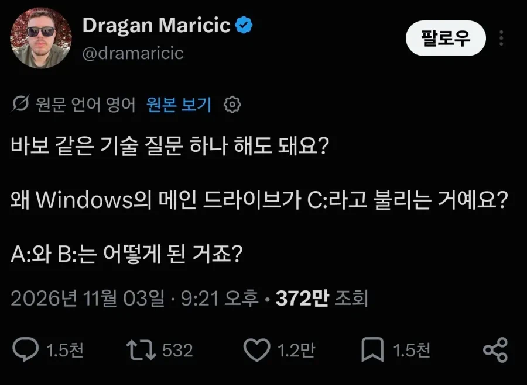

보통 a는 5.25인치용, b는 3.5인치용 아니었나?
3.5인치도 따지고 보면 한참 후에 나온 거라서. 5.25만 두 개 달린 pc가 있었음 그때는 c가 없었고 a랑 b로 os와 프로그램을 각각 돌림.
그리고 이전에는 녹음기+테이프가 있었음.
내 기억엔 이게 맞음
?
C드라이브가 생기기전에 그러니깐 8086 cpu 이런거 돌아갈때 os는 어딘가에 있어야겠지? 도스 같은거 그게 a드라이브였음. 여기에 어플들 넣고 같이 돌리고 그랬음. 근데 어플이란것도 바꿔가면서 해야했잖아 그래서 b 드라이브가 맞음. 내 말이 맞음. 왜냐하면 내가 썼거든
찾아보니, 1990년대 초반이라고 하네요. 어르신 연세가...?
애기때부터 컴퓨터 했음 ㅋㅋㅋ 그거 버리지 말고 잘 모아둘껄 ㅜㅜ
ㅋㅋ그때 국딩이었어도 최소 40대여..ㅋㅋㅋ
나도 테이프 쓰는 spc-1000부터 xt, at 다 썼었는데.
드라이브 알파벳을 폴더나 파일 이름 변경하듯이 쉽게 바꿀 수 있는데 내껀 특별해야한다며 Z드라이브 X드라이브 이렇게 변경해봤는데 C드라이브 D드라이브처럼 예쁘지가 않고 너무 모난 느낌이라 결국은 버리게 되더라
자고로 튜닝의 끝은 순정이어라
역시 usb이름은 이동식이 맞지
동식이 햄 아직 정정하시지?
렉카사고 시 더 저렙인 쪽을 추천하는데 그게 30렙이네
그럴땐 둘 다 비추를 누르도록
처음 부팅할때 5.25 디스켓 명을 바이러스라고 했던 기억이 있는데 왜그런지 모르겠음 ㅋ
바이오스를 잘 못 들어서?
이건가.. 그걸로 부팅하고 나면 그냥 딸랑 커맨드라인 나오고 끝이었는데. 그거 나오면 M 디스크 넣어서 M실행하거나 고인돌 하거나 그랬었음 ㅋㅋ
가라사대 플로피가 이르길 이제 더는 나의 시대가 오지 않음이라 이는 곧 새로운 자가 자리를 대신하리라 이르더라
디스켓으로 태양보면 눈싸움 쌉가능
디스켓이 아니라 '플로피 디스크'다
디스켓은 브랜드
1,457,669 byte
아직도 기억나네
5.25 디스켓 드라이브 위아래로 두개 달려서 위는 A: 아래는 B:
아 추억 돋네
옛날에는 A: 드라이브 하나만 있었지 플로피 디스크용.
A는 5.25인치 B는 3.5인치
바로 대체된 관계가 아니라 겹친기간이 있음
비슷한 거: 음계는 왜 C부터 시작하고 A, B로 끝나는가
마찬가지로 A로 시작하는 단음계에 먼저 이름이 붙여졌고, 나중에 등장한 C로 시작하는 장음계가 대세가 됐음
단음은 a가 도인거임??
???: 죽은 신들의 무덤은 어디에 있는가
사실 지금와서는 A:,B:에 할당할수 있긴 함 구식프로그램에서 오류터져서 그렇지..
프린세스메이커 디스켓으로 인스톨 해봤어??!!
386, 486 시절만 해도 아예 바이오스에 플로피 자리가 A,B로 남아 있었음. 윈도우 95까지는 그런 레거시가 그냥 남아 있어서 플로피를 없애더라도 문자 할당은 못 바꿨지. 그게 아예 굳어지다 보니 커널을 완전히 새로 설계한 윈도우 NT와 XP에서도 없애지를 못했고...
애당초에 DOS 만들 때 저장장치를 오늘날처럼 많이 붙일 걸 생각 안했기 때문에 벌어진 사태임. 빌 게이츠가 메모리는 640KB면 충분하다고 망언을 하던 시절이니 뭐...
드라이브 문자는 도스 계열 OS에서나 의미 있는 거라서 바이오스는 상관이 없음. 그냥 관례상 남아있는 거. 그리고 NT 커널 만들어졌을 때는 물론이고 XP까지도 플로피 디스크가 현역이었어.
이미 관행이 되어버린 c
여기 댓글에 신나서 설명하고 있는 할배들 건강검진 할 때 대장내시경 꼭 받아라. 그럴 나이다.
여기서 설명가능한사람중에 제일 어린사람도
몇년전부터 대장내시경 받았을듯 ㅋㅋ
왜 윈도우의 디스크는 C:부터 시작할까?
초기 PC에는 하드디스크가 없었고, 플로피디스크 드라이브 하나가 전부였다. 이 드라이브가 A:였다. 운영체제도 실행하고 프로그램도 구동하고 파일도 저장하는 등 모든 작업을 A: 하나로 처리했다.
하지만 디스크를 복사하거나 파일을 옮길 때마다 플로피디스크를 계속 바꿔 끼워야 하는 불편함이 있었다. 그래서 두 번째 드라이브를 추가하기 시작했고, 여기에 B:가 할당되었다.
당시 많은 프로그램은 A:를 기본 드라이브로 가정하고 개발되었다. 자연스럽게 A:는 주 드라이브, B:는 보조 드라이브라는 관행이 자리 잡았다.
이후 하드디스크가 등장했지만, 기존 프로그램과의 호환성을 유지해야 했다. A:와 B:는 이미 플로피디스크용으로 사용되고 있었기 때문에 하드디스크에는 C:가 할당되었다.
초기에는 플로피디스크로 부팅하고 하드디스크를 저장 공간으로 사용하는 경우도 있었지만, 점차 하드디스크에 운영체제와 프로그램을 설치하고 직접 부팅하는 방식이 일반화되었다.
그 과정에서 C:는 운영체제가 설치되는 기본 드라이브로 자리 잡았고, 수많은 프로그램도 이를 기준으로 개발되었다.
결국 하드디스크가 플로피디스크를 완전히 대체한 뒤에도 A:와 B:는 플로피디스크용이라는 역사적 관행이 남았고, C:는 시스템 드라이브의 사실상 표준이 되었다.
즉, 윈도우가 C:부터 시작하는 이유는 기술적인 필연성 때문이 아니라, 초기 PC의 구조와 기존 소프트웨어의 호환성을 유지해 온 역사 때문이다.
부팅시 abc드라이브 순서대로 읽어들임
부팅디스크가 따로 필요했기 때문이라 그럼
예전에 5.25 + 3.5 두개달린거보고 개쩐다 했는데....
지금도 A B 걍 할당해서 쓸수 있기는한데,
윈도를 어거지로 A에 할당하면 오류 개터지는 프로그램들을 볼수 잇슴
어중간한 옛날 프로그램들은 C드라이브 하드코딩된놈들이 많아서
그니까 주민번호 뒷자리가 1,2인 사람과 3,4인사람 차이라는거지?
95 98시절에 플로피 넣으면 A나 B로 인식됐던게 기억남
그 전은 모르겠다
그러니까 그냥 A와 B는 영구결번 처리했다는 거잖슴
어릴때 5.25 넣고 그..레버라고 해야하나? 그 잠금장치 같은걸 꼭 내려야 작동되는거 보고 이거 중간에 튀어나올까봐 꼭 잠그는건가보다 생각했는데.. ㅋㅋ
친구네 집에서 게임 복사하는데 3.5 하나에 안 담기는 건 포기했었지ㅋㅋㅋ
A드라이브는 OS용, B드라이브는 어플리케이션용. 근데 그때도 바이오스는 있었을텐데...